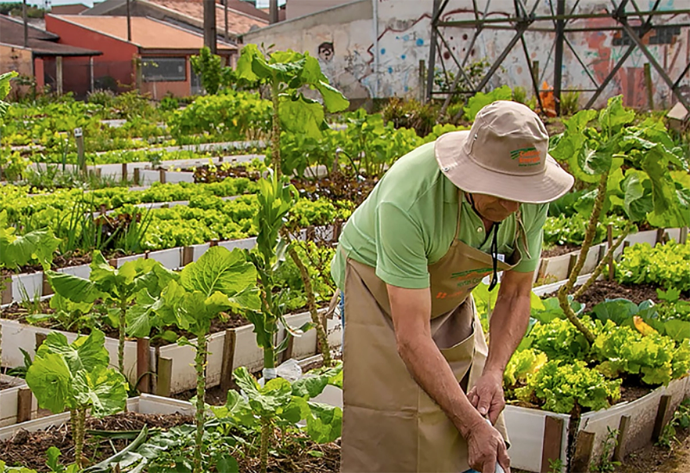
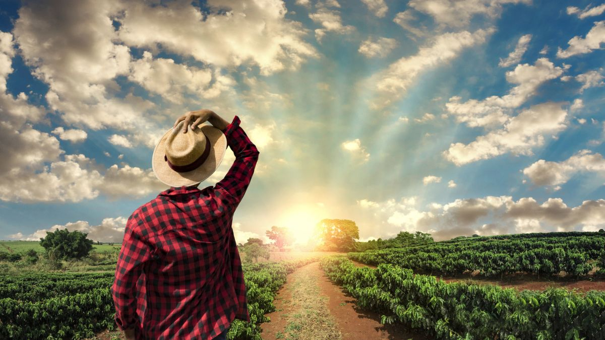

Agricultura no Campo
No campo, a agricultura é praticada em grandes propriedades com uso de máquinas e tecnologias para produção em larga escala. Ela é essencial para a economia e para o abastecimento de alimentos.
Agricultura na Cidade
Nas cidades, a agricultura é realizada em pequenos espaços como hortas em telhados, varandas e terrenos urbanos. Contribui para a sustentabilidade e educação ambiental.